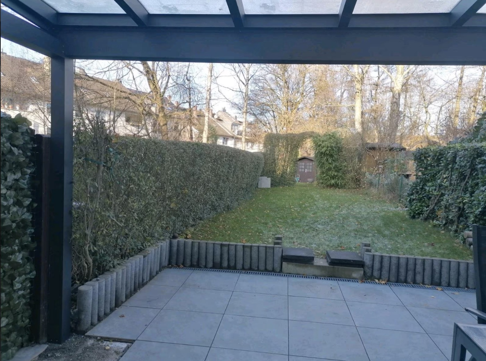
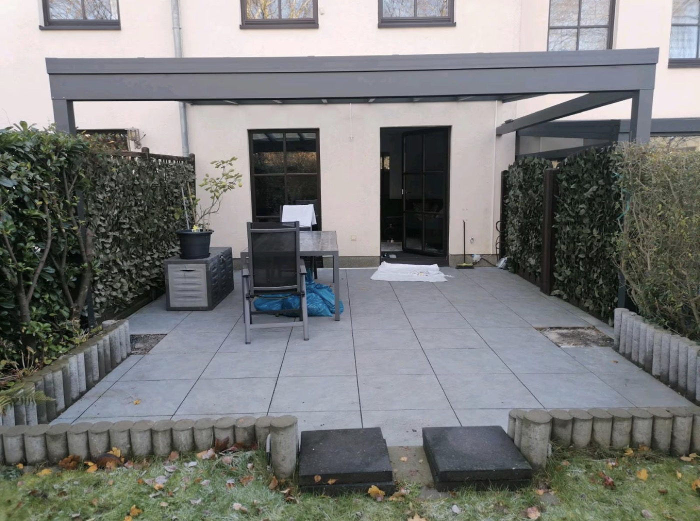
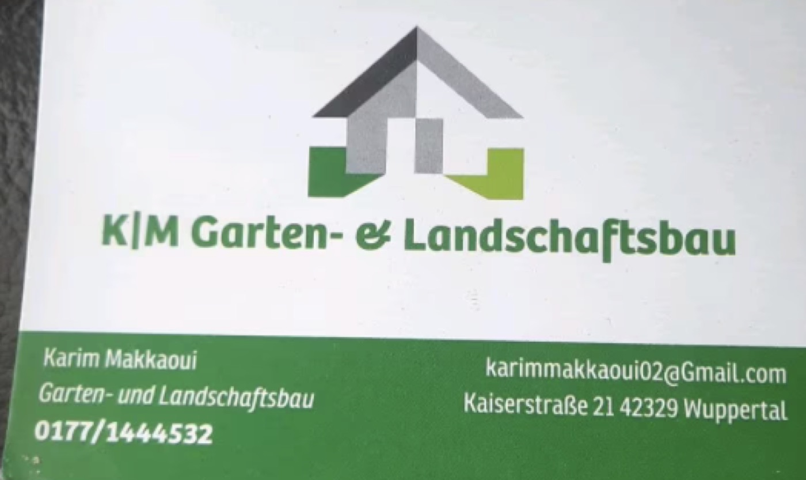
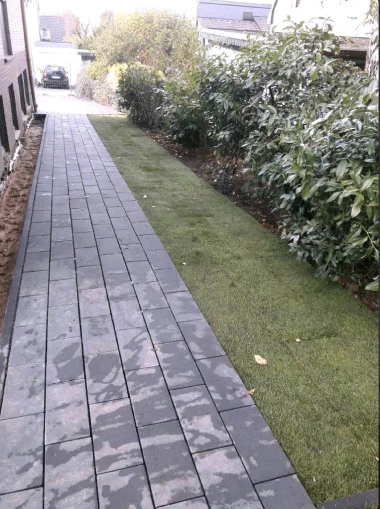

Was oft Anfragen kostet
- Es fehlen echte Bilder von realen Arbeiten
- Leistungen bleiben zu allgemein oder unklar
- Besucher finden keine schnelle Kontaktmöglichkeit
- Vertrauen entsteht nicht in den ersten Sekunden
Karim Makkaoui | Garten- & Landschaftsbau | Wuppertal
Jetzt anrufenProfessioneller Garten- & Landschaftsbau in Wuppertal
Karim Makkaoui Garten- & Landschaftsbau steht für saubere, ordentliche Arbeiten rund um Pflasterarbeiten, Terrassen, Rasenflächen, Gartenpflege und Außenanlagen. Mit echten Projektbildern und direktem Kontakt sehen Interessenten sofort, was angeboten wird und warum sich eine Anfrage lohnt.
Wer gute Arbeit sichtbar zeigt und direkt erreichbar ist, gewinnt schneller Vertrauen und bekommt eher Anfragen.
Jetzt anrufenWarum diese Seite wirkt
Genau das leistet diese Seite. Statt vager Aussagen zeigt sie echte Projekte, nennt die wichtigsten Leistungen direkt und macht die Kontaktaufnahme leicht.
Leistungen
Kurz, verständlich und nah an den Arbeiten, die auf den echten Bildern zu sehen sind.
Für Einfahrten, Wege, Höfe und Flächen, die sauber, gerade und langfristig ordentlich ausgeführt sein sollen.
Für Außenbereiche, die funktional sein und gleichzeitig ordentlich wirken sollen.
Für gepflegte Grünflächen, saubere Gärten und ein ordentliches Gesamtbild rund ums Haus.
Für klare Abgrenzungen, ordentliche Außenwirkung und Projekte, die sauber abgeschlossen sein sollen.
Für seitliche Wege, Hofbereiche und Übergänge, die funktional und sauber ausgeführt sein sollen.
Für Eigentümer und Kunden, die schnell verstehen wollen, wie das Projekt sinnvoll und sauber umgesetzt werden kann.
Referenzen
Genau deshalb sind hier echte Bilder aus Projekten von Karim Makkaoui eingebunden.

Der Bestand wirkt offen und wenig sauber gefasst. Genau hier zeigt ein guter Vorher-Nachher-Vergleich die Qualität der Ausführung.

Große Platten, klare Linien und ein aufgeräumter Gesamteindruck. Genau so entstehen Bilder, die Vertrauen aufbauen und Anfragen leichter machen.


Nicht nur reden, sondern zeigen. Genau das hebt einen Betrieb online von vielen anderen Anzeigen und Profilen ab.
Nächster Schritt
Warum wir
Genau deshalb ist diese Seite ruhig, ordentlich und direkt aufgebaut. Besucher sollen in Sekunden verstehen, warum sie hier eher schreiben sollten als woanders.
Nicht weil die Seite laut ist, sondern weil sie echte Arbeit zeigt, die Leistungen klar sortiert und Kontakt sofort möglich macht.
Besucher merken sofort, dass hier echte Arbeiten und ein realer Betrieb dahinterstehen.
Gerade bei mehreren Gartenleistungen ist Struktur der Unterschied zwischen Interesse und Absprung.
Je leichter der erste Schritt, desto eher rufen oder schreiben Interessenten direkt statt weiterzusuchen.
Die meisten lokalen Anfragen starten mobil. Darum sind Bilder, Kontaktdaten und CTAs sofort sichtbar.
So läuft es ab
Besucher sehen direkt echte Bilder und erkennen sofort, ob die Qualität und Stilrichtung zu ihrem Projekt passen.
Kurz anrufen, E-Mail schreiben oder das Anliegen im Formular schildern.
Danach folgt die Abstimmung zum Vorhaben und die passende Umsetzung für Garten oder Außenbereich.
FAQ
Typische Leistungen sind Pflasterarbeiten, Terrassen, Rasen, Gartenpflege, Wege und weitere Arbeiten rund um den Außenbereich.
Ja. Die Seite ist auf Wuppertal und Umgebung ausgerichtet, damit lokale Interessenten sofort erkennen, dass der Betrieb regional aktiv ist.
Ja. Telefonnummer und E-Mail sind direkt eingebunden, damit der Erstkontakt schnell und unkompliziert möglich ist.
Weil Interessenten in Sekunden sehen, dass echte Arbeit vorhanden ist. Das schafft Vertrauen viel schneller als reine Textblöcke.
Kontakt
Wer direkt Kontakt aufnehmen will, soll nicht lange suchen müssen. Deshalb sind Telefon, E-Mail und Anfrageformular hier sofort erreichbar.
Kaiserstraße 21, 42329 Wuppertal